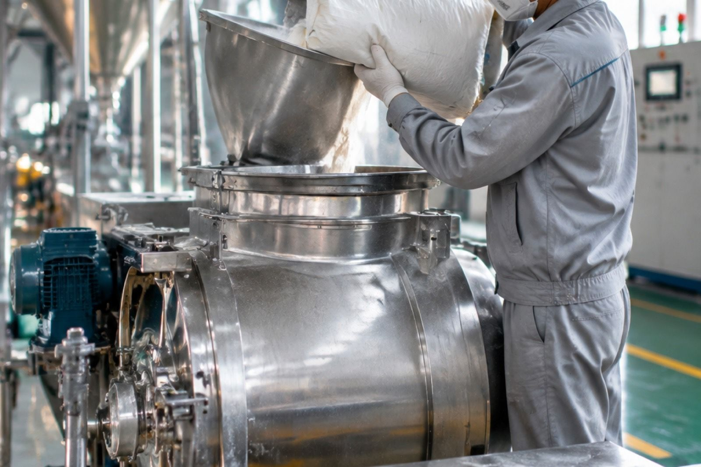
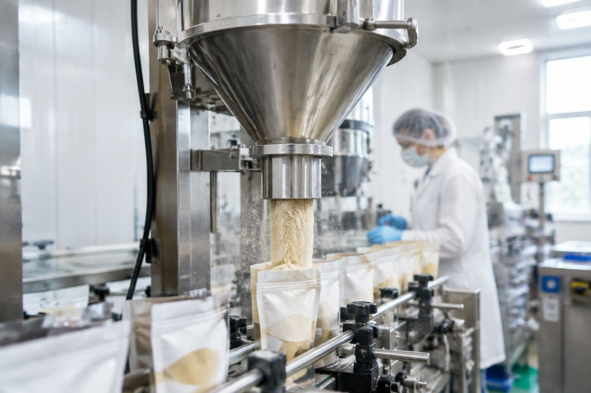
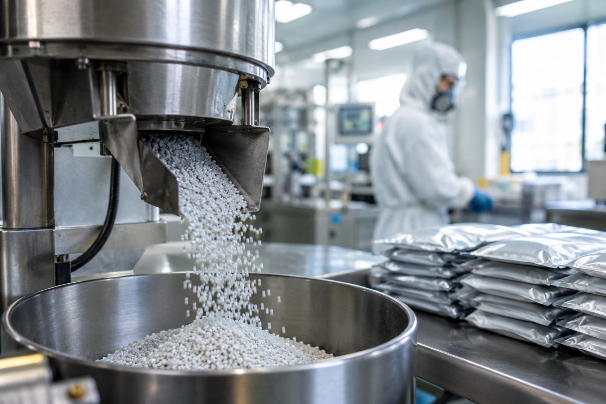
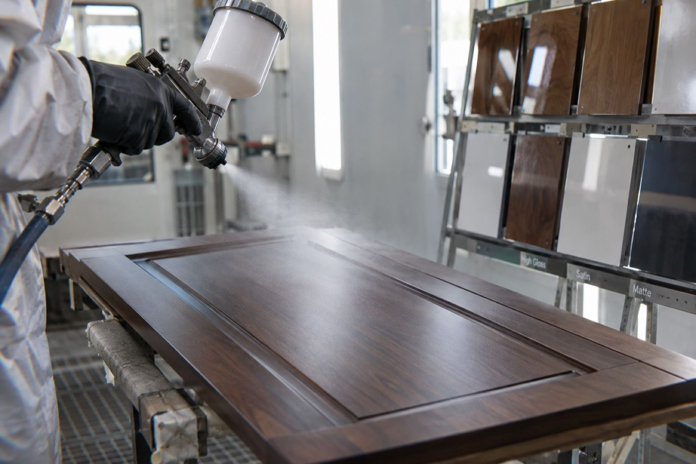
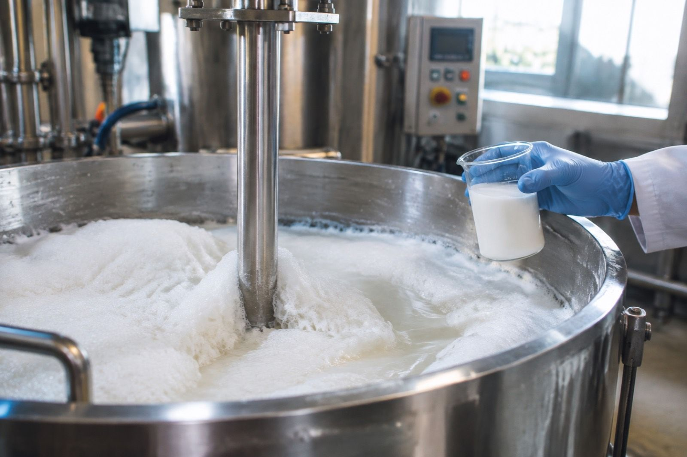
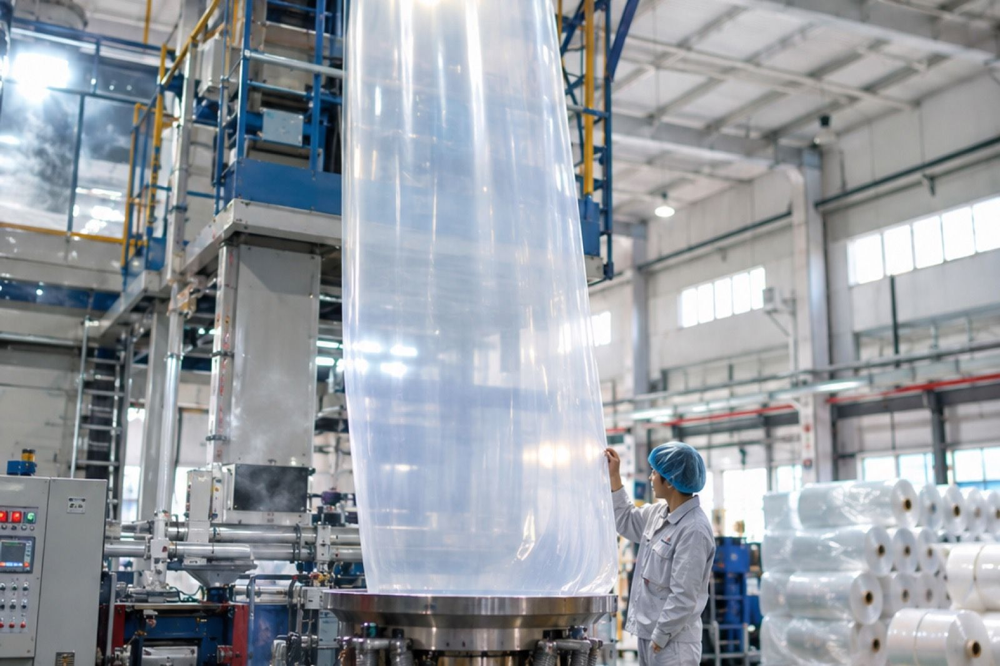
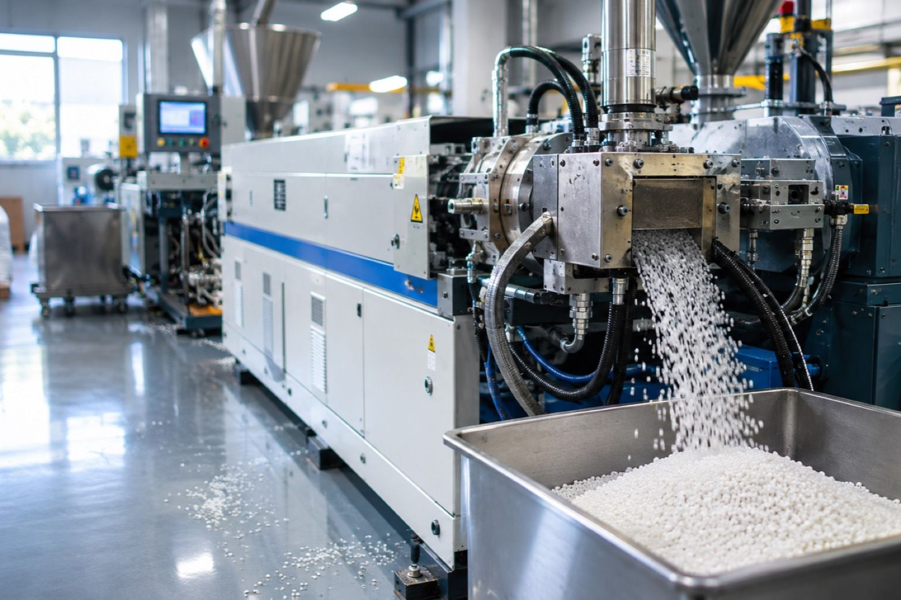

Find your application
Each track is organised around a process failure customers actually describe. The grade follows the problem, not the other way round.

Feed Additive Flow & Carrier
Liquid vitamins and choline that will not stay a free-flowing powder; premix caking in store.
View track →
Food Powder Flow
Seasoning and beverage powders bridging in the hopper or setting hard on the shelf.
View track →
Oral Care Silica
Paste that separates, thins or loses its structure between batches.
View track →
Agrochemical Carrier
WG that will not disintegrate, SC that settles hard, WP that dusts on the line.
View track →Industrial Fluoride Removal
Fluoride that stays above limit after precipitation, with an unstable discharge.
View track →
Coating Matting & Rheology
Matting that kills clarity, sags on application or settles hard in the can.
View track →
Defoaming & System Stability
Foam that returns, or a defoamer that craters and floats oil on the film.
View track →
Plastic Film Antiblock
Film rolls that block, or antiblock that pushes haze past specification.
View track →
Functional Masterbatch Dispersion
Dusty feeding, screen-pack pressure climbing, specks showing in downstream film.
View track →